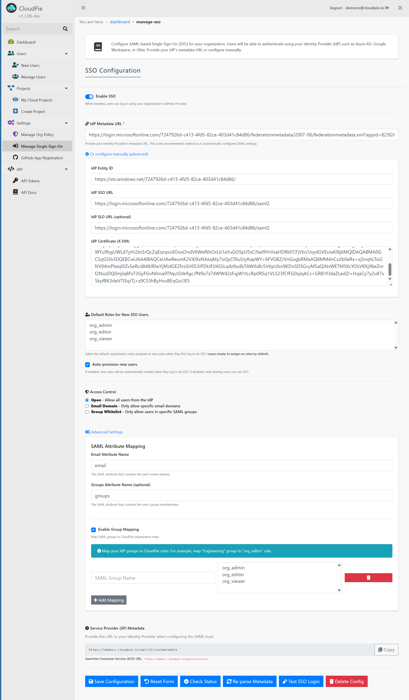

Manage Single Sign-On (SSO)
Set up and manage SAML-based Single Sign-On (SSO) for your organization.
SSO lets users log in using existing corporate identities from providers such as Azure AD, Google Workspace, or Okta — without maintaining separate Cloudpie credentials.
Overview
The Manage Single Sign-On page provides configuration for SAML metadata, user role defaults, group mappings, and access control.
Example Image: Manage SSO Page

Enabling SSO
- Open Settings → Manage Single Sign-On.
- Toggle Enable SSO to activate SAML authentication.
- Once enabled, users can log in through your organization’s IdP.
IdP Configuration
Cloudpie supports two setup methods depending on how your identity provider exposes metadata.
1. Using Metadata URL (Recommended)
- Paste your IdP Metadata URL.
- Cloudpie automatically fetches:
- Entity ID
- SSO URL
- SLO URL (if available)
- X.509 Certificate
Tip: Use this method for providers like Azure AD, Okta, or Google Workspace, as it automatically keeps configuration up to date.
2. Manual Configuration (Advanced)
Expand “Or configure manually (advanced)” to enter details manually:
| Field | Description |
|---|---|
| IdP Entity ID | Unique identifier of your IdP. |
| IdP SSO URL | Authentication endpoint. |
| IdP SLO URL (optional) | Logout endpoint (optional). |
| IdP Certificate (X.509) | Public certificate for signature verification. |
Example Image: Manual Configuration

Default Roles for New SSO Users
Select one or more default organization roles to automatically assign to new users when they first log in via SSO.
- Leave this field empty to avoid automatic role assignment.
- Roles can be modified later in User Management.
Example Image: Default Roles Selection

Auto-Provisioning New Users
When Auto-provision new users is enabled:
- New users will be automatically created in Cloudpie the first time they log in using SSO.
- If disabled, only existing users are permitted to log in through SSO.
Access Control
Control who can log in via SSO by selecting one of the access modes:
| Mode | Description |
|---|---|
| Open | Allow all users from the IdP to log in. |
| Email Domain | Restrict access to specific email domains (comma-separated). |
| Group Whitelist | Allow only selected SAML groups to access Cloudpie. |
Example Image: Access Control Options

Advanced Settings
SAML Attribute Mapping
Map attributes from your SAML assertion to Cloudpie user fields.
| Attribute | Description |
|---|---|
| Email Attribute Name | The SAML attribute containing the user’s email address. |
| Groups Attribute Name (optional) | The attribute listing the user’s group memberships. |
Group Mapping
Link SAML groups from your IdP to Cloudpie organization roles.
- Toggle Enable Group Mapping.
- For each mapping:
- Enter the SAML Group Name (e.g., “Engineering”).
- Select one or more Cloudpie Roles (e.g.,
org_editor). - Click Add Mapping to save.
Example Image: Group Mapping Section

Service Provider (SP) Metadata
Provide the following URLs to your Identity Provider when establishing the SAML trust:
| Field | Description |
|---|---|
| SP Metadata URL | The metadata endpoint your IdP will use to import Cloudpie’s SAML configuration. |
| ACS (Assertion Consumer Service) URL | Endpoint that receives authentication responses from the IdP. |
Use the Copy button beside the SP Metadata URL to quickly copy the endpoint.
Example Image: SP Metadata Section

SSO Management Actions
At the bottom of the page, the following actions are available:
| Button | Purpose |
|---|---|
| Save Configuration | Save all current SSO settings. |
| Reset Form | Restore the configuration from the most recent save. |
| Check Status | Validate that the SSO configuration is complete and active. |
| Re-parse Metadata | Re-fetch and update metadata from the IdP. |
| Test SSO Login | Run a test login to verify SSO functionality. |
| Delete Config | Permanently remove the current SSO configuration. |
Example Image: Action Buttons Section

Notes
- Re-Parsing Metadata: Refreshes SAML settings automatically if your IdP configuration changes.
- Group Mapping Validation: Invalid or non-existent roles are filtered out before saving.
- Safe Defaults: When SSO is disabled, all users must sign in using local credentials.
- Error Handling: Authentication failures during SSO redirect users back to the login page with a visible error message.
Troubleshooting (Optional)
Common Issues
| Symptom | Possible Cause | Resolution |
|---|---|---|
| Login flickers or redirects without success | Invalid ACS URL or certificate mismatch | Verify metadata is updated and re-parse configuration. |
| Metadata fetch fails | IdP metadata URL inaccessible or requires authentication | Use the manual configuration option. |
| Users not assigned expected roles | Group mapping disabled or incorrect role names | Check mapping entries and ensure roles exist. |